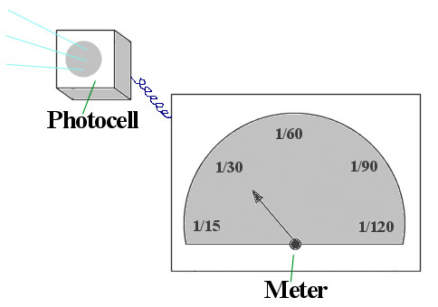

|
Camera (very) FundamentalsVersion 3.1, page 5, © 2002, 2006, 2009 by Dale Cotton, all rights reserved Lesson Four: Light Meters and Light Measurement Fig. 12: Photocell light meter Digital: The light metering concepts on this page apply equally to digital and film. Ready for the Mark IV? Because there's still an operational problem with the Mark III that's crying out for attention - how do we know how long an exposure time to use? Time to get electrical. Going the nearest electronics parts store, we buy a little gadget called a photocell that creates an electric circuit when light shines on it. The stronger the light, the stronger the current. We attach this to a little meter that has a pointer that moves from left to right as the current from the photocell gets stronger – something like a thermometer of light. By trial and error we can pencil in marks on the meter face that shows what shutter open time (shutter speed) to use to get a correct exposure for 100 ISO film. So if the meter points at the half way mark and we find by trial and error that a shutter speed of 1/60th second gives us a correctly exposed frame of film, we'd make a mark at the half way point on the meter dial and label it 1/60th. (Notice that using different apertures would complicate things, so we'll stick to a single aperture for all our tests.) We then do trials on the one-quarter brightness point on the meter dial and find that 1/120th of a second works for it, and so on. Although it was the original Nikon SLR, the model F, that first caught the attention of Vietnam war photographers, it like other SLRs at that time did not have built-in light meters. Back in 1972 the second model, the Nikon F2, was one of the first cameras ever to have a built-in light meter. Your digital camera has a much more advanced metering system built in, already calibrated, and capable of directly controlling the shutter speed and/or aperture without your having to do that by hand. Your turn: The previous exercises have actually involved the metering system in your camera: aperture priority depends on the meter to automatically set the shutter speed, and shutter priority depends on the meter to automatically set the aperture. |
| - 5 - |